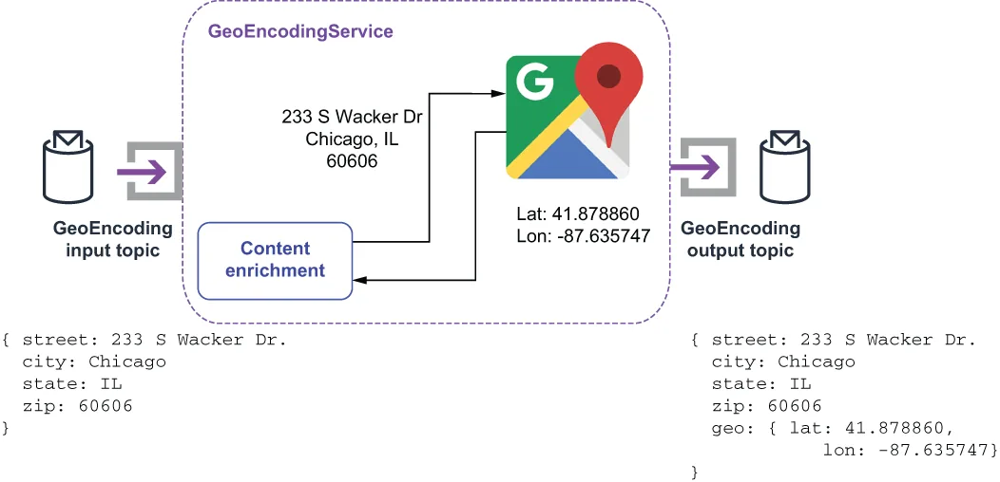

When processing streaming events, it is often useful to augment the incoming message with additional information that the downstream system requires. In our example, the incoming customer order event to the OrderValidationService will contain a raw, unvalidated street address, but the consuming microservices also require a geo-encoded location with a latitude and longitude pair to provide navigation to the delivery drivers.
在处理流式事件时，往传入的消息上补充一些下游系统所需要的附加信息，往往是很有用的。在我们的例子中，传入 OrderValidationService 的客户订单事件会包含一个原始的、未经校验的街道地址，但消费这些消息的微服务还需要一个带有经纬度对的地理编码位置，以便为配送司机提供导航。
This type of problem is typically addressed with the content enricher pattern, which is the term for a process that uses information inside an incoming message to augment the original message contents with the new information. In our particular use case, we will retrieve data from an external source and add it to the outgoing message, as shown in figure 8.8. Our GeoEncodingService will take the delivery address details provided by the customer and pass them to the Google Maps API web service. The resulting latitude and longitude that corresponds to the address will then be included in the outbound message.
这类问题通常是用内容丰富器模式（content enricher pattern）来解决的——这个术语指的是这样一种处理过程：利用传入消息中的信息，去为原始消息内容补充上新的信息。在我们这个具体用例中，我们将从一个外部来源取回数据，并把它加进出站消息中，如图 8.8 所示。我们的 GeoEncodingService 会接收客户所提供的配送地址详情，并把它们交给 Google Maps API 这个 Web 服务。随后，与该地址相对应的经纬度就会被包含进出站消息中。

Figure 8.8 The GeoEncoderService implements the content enrichment pattern by using the provided street address to look up the corresponding latitude and longitude and add it to the address object.
图 8.8 GeoEncoderService 实现了内容丰富模式：它利用所提供的街道地址去查出对应的经纬度，并把它加进地址对象中。
The following listing shows the implementation of the GeoEncodingService that invokes the Google Maps service and augments the incoming Address object with the associated latitude and longitude value.
下面这份清单展示了 GeoEncodingService 的实现：它调用 Google Maps 服务，并为传入的 Address 对象补充上相关联的经纬度值。
Listing 8.8 The GeoEncoderService’s implementation of the content enricher pattern
public class GeoEncoderService implements Function<Address, Address> {
boolean initalized = false;
String apiKey;
GeoApiContext geoContext;
public Void process(Address addr, Context context) throws Exception {
if (!initalized) {
init(context);
}
Address result = new Address();
result.setCity(addr.getCity());
result.setState(addr.getState());
result.setStreet(addr.getStreet());
result.setZip(addr.getZip());
try {
GeocodingResult[] results =
GeocodingApi.geocode(geoContext, formatAddress(addr)).await();
if (results != null && results[0].geometry != null) {
Geometry geo = results[0].geometry;
LatLon ll = new LatLon();
ll.setLatitude(geo.location.lat);
ll.setLongitude(geo.location.lng);
result.setGeo(ll);
}
} catch (InterruptedException | IOException | ApiException ex) {
context.getCurrentRecord().fail();
context.getLogger().error(ex.getMessage());
} finally {
return result;
}
}
private void init(Context context) {
apiKey = context.getUserConfigValue("apiKey").toString();
geoContext = new GeoApiContext.Builder()
.apiKey(apiKey).maxRetries(3)
.retryTimeout(3000, TimeUnit.MILLISECONDS).build();
initalized = true;
}
}
The service uses an API key provided by the configuration properties to invoke the Google Maps web service and uses the first response it gets as the source of the latitude and longitude values. If the call to the web service isn’t successful, we fail the message so it can be retried at a later time.
该服务使用配置属性中所提供的一个 API key 来调用 Google Maps Web 服务，并把它得到的第一个响应当作经纬度值的来源。如果对这个 Web 服务的调用没有成功，我们就判定该消息失败，以便它在稍后能够被重试。
While using an external service is one of the most common uses for the content enrichment pattern, there are implementations that merely perform internal calculations based on the message contents, such as computing the message size or MD5 hash of the message contents and adding that to the message properties. This allows the message consumer to validate that the message contents have not been altered.
虽然调用外部服务是内容丰富模式最常见的用途之一，但也存在这样一些实现：它们仅仅基于消息内容执行内部计算，例如计算消息的大小或消息内容的 MD5 哈希值，并把它加到消息属性中。这让消息消费者能够验证消息内容没有被改动过。
Another common use case is to retrieve the current time from the operating system and append that timestamp to the message to indicate when it was received or processed. This information is useful for maintaining the message order if you wish to process the messages in the order they were received, or for identifying bottlenecks in the DAG if you appended a received timestamp at each step of the process.
另一个常见用例是：从操作系统取回当前时间，并把那个时间戳附加到消息上，用以表明它是在何时被接收或被处理的。如果你希望按消息被接收的顺序来处理它们，这一信息对维持消息顺序很有用；或者，如果你在流程的每一步都附加了一个接收时间戳，它也能用来识别 DAG 中的瓶颈所在。